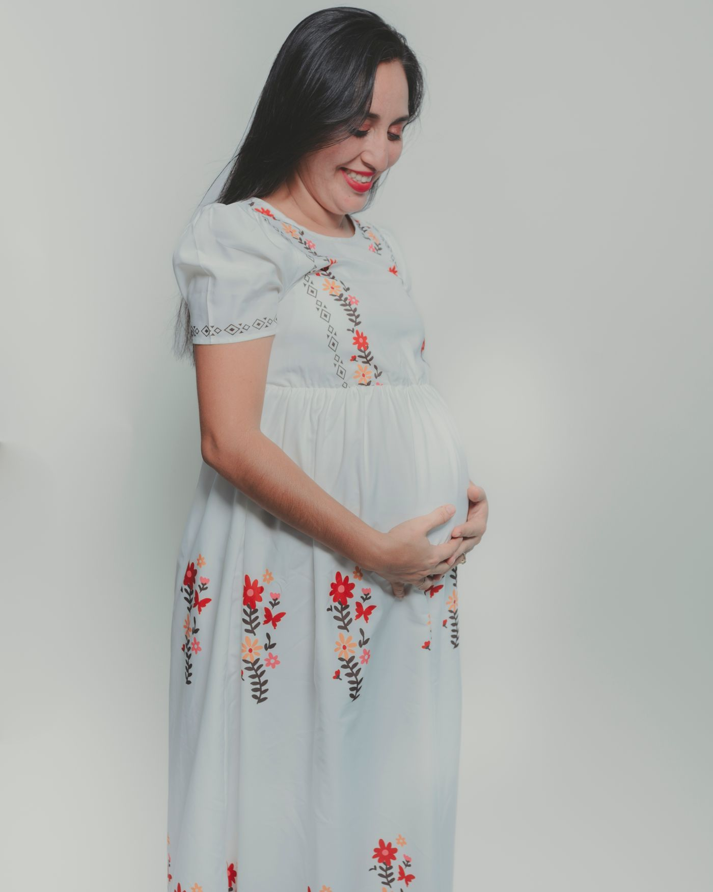

Ways to be seen.
Three approaches to a portrait session, each shaped around the people in the frame.

Portraits
Individual, professional and creative portraits. We shape the light and background around how you want to present yourself.
Choose a clean professional portrait, an intimate study in natural light or a more expressive creative frame. Bring one or two looks that help you feel like yourself.
30–60 minutes · Individual, professional & creative portraits

Family
Family groups, parent-and-child photographs and small pairings, with time for movement and breaks.
We make space for the whole group, then move into parent-and-child photographs and smaller pairings. Bring a familiar toy for younger children and tell us which combinations matter to you.
About 60 minutes · Whole-family portraits & smaller pairings

Maternity
Natural-light and studio maternity portraits with space for a partner, and gentle direction throughout.
Choose the coverage and clothing you feel comfortable with. We can plan seated poses, pauses and partner photographs around your comfort. Share any movement or access needs when you enquire.
About 60 minutes · Studio, natural light & partner-inclusive portraits
Make room for the moment.
Bring what feels familiar
Comfortable clothing helps you move and settle into a pose. For groups, choose complementary tones and textures with enough difference to show each person’s style.
Tell us what matters
Share the purpose of the photographs, important family pairings and any requests for privacy, breaks or accessibility. The enquiry notes are a good place to begin.